| |
|
DEMİRYOLU RAPORLARI
|
Demiryolu projelerine özgü raporlar şunlardır: Makaslar ve Gabari Dışı Noktalar
Güzergah Kontrolü Hat Ekseni Uzun Kiriş Yöntemiyle Hat Aplikasyonu Ray Aplikasyonu ve Kontrolü Rayların Kotları ve Eğimleri Rayların Kırmızı Kot Farkları Hat Ripajı Plasser Buraj Makinesi GEO Formatı 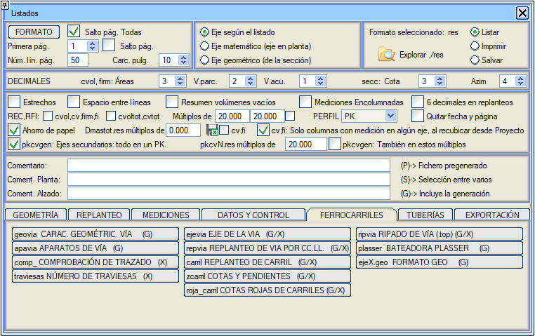
Makaslar ve Gabari Dışı Noktalar MAKASLAR raporu (apavia.res) her bir makas için şunları gösterir:
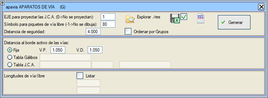 Programın, gabari dışı noktaların hesaplanması için güvenlik mesafesi olarak girilen değeri kullanımı şu şekildedir: Önce işleyen yüzeylere tanımlanan mesafede bir nokta hesaplanır ve ardından her bir güzergah boyunca tanımlanan güvenlik mesafesi kadar ötelenir. Nihai gabari dışı nokta, bu son KM'de her bir güzergaha yansıtılan bir noktadır. Hatların işleyen kenarına olan mesafe farklı şekillerde verilebilir:
#--------------------------------------------------------------------
# turquia.gal #-------------------------------------------------------------------- # Yanal gabari tablosu. # İşleyen yüze olan mesafeler, gabari dışı noktaları yerleştirmek için #-------------------------------------------------------------------- # Enterpolasyon: 1:enterpole et 0:En kısıtlayıcı değeri al #-------------------------------------------------------------------- I 1 #-------------------------------------------------------------------- # Tablo Yarıçap, dış gabari, iç gabari #-------------------------------------------------------------------- Rei 150 2.222 2.219 # Daha küçük yarıçaplar için bu değer kullanılır. Rei 160 2.208 2.205 Rei 170 2.196 2.193 Rei 180 2.185 2.182 Rei 190 2.175 2.173 Rei 200 2.167 2.164 Rei 210 2.159 2.156 Rei 220 2.151 2.149 Rei 230 2.145 2.143 Rei 240 2.139 2.137 Rei 250 2.133 2.131 Rei 251 2.000 2.000 # Daha büyük yarıçaplar ve aliymanlar için. #-------------------------------------------------------------------- Son #--------------------------------------------------------------------
Trenin yerleştirilmesi için gabari dışı hat uzunluklarını listelemeyi sağlar. Yaslanma rayı başlangıç eklemine bir güvenlik mesafesi ve minimum bir hat uzunluğu tanımlanır. Gabari dışı hat uzunlukları listelendiğinde, her bir güzergahın toplam uzunluğu, makaslar tarafından işgal edilen uzunluk ve fark, yani makassız hat uzunluğu da listelenir. 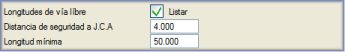
[] Gruplara göre sırala kutucuğu etkinleştirildiğinde, makaslar, sapma güzergahının ait olduğu gruba göre sıralanmış olarak listelenir. Eğer grup devre dışı bırakılmışsa, makasları listelenmez.   Sonuçlar klasöründe, xlsx formatında seçim. Sonuçlar klasöründe, xlsx formatında seçim.Bu raporda Yaslanma Rayı Başlangıç Eklemleri, karakterler artı numaradan oluşan bileşik adla gösterilir. Demiryolu Güzergahının Kontrolü Plan ve boykesit güzergahının kontrol raporu, .xlsx formatında mevcuttur. Kontrolü gerçekleştirmek için gerekli tüm parametreleri içeren FFCC_ADIF_2021.dip tablosuyla kullanılmalıdır. Eğer tasarım tablosu [Referans] modunu içeriyorsa, bu kontrol [Normal] ve [İstisnai] modlarının önüne eklenir. Hat Ekseni HAT EKSENİ raporu (ejevia.res), ejevia#x.res dosyasında oluşturulur; burada # güzergah numarasıdır ve x, u (tek hat), d (sağ hat) veya i (sol hat) değerini alır. İstenen kesim için, plandaki eksene olan mesafeyi, (X,Y) koordinatlarını, KIRMIZI KOT, ALÇAK RAY ve ALÇAK RAY KOTU (deverin hesaplandığı kot) kotlarını ve mm cinsinden deveri listeler. Kot örnekleri: Alçak ray kotu: 1435 nominal genişliğe ve 1500 hesap genişliğine sahip bir hat için tanımlanır, 65mm'lik bir ray başının merkeziyle çakışır. Kırmızı kot, [HAT VE TRAVERS]'de seçilen seçeneğe bağlı olarak [ALÇAK RAY] veya [ALÇAK RAY KOTU] ile çakışabilir. Alçak ray kotu, rayın işleyen yüzüne karşılık gelen kot olacaktır. 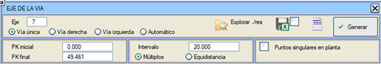
Bu rapor, ilgili seçeneği işaretleyerek plandaki güzergahın karakteristik noktalarında bir veri yazdırma imkanı sunar. Eğer otomatik rapor seçilirse, çift hatlı demiryollarında ve EKSANTRİKLİK VE HAT ARALIĞI menüsünden herhangi bir taraf iptal edilmişse, rapor kalan tarafın hattının verilerini veya her ikisi de kalıyorsa sağ tarafın verilerini yazdırır. Sonuçlar klasöründe, xlsx formatında seçim.Rapor başlıklarının metinlerini dosyalarda düzenleme ve kaydetme imkanı   Travers Sayısı traviesas0.xlsx raporu, makaslar hariç, her bir (aktif) güzergahın travers sayısını içerir. BIM geometrisi oluşturulduğunda geçici klasörde her bir güzergah için oluşturulan traviesa_x.txt dosyalarından bilgi çıkarır. Uzun Kiriş Yöntemiyle Hat Aplikasyonu 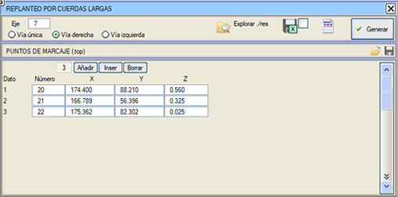HAT APLİKASYONU raporu (repvia.res), RENFE'nin N.R.V. 7-1-0.2 normuna göre hazırlanmıştır. İşaretleme noktaları, .top formatındaki dosyalardan yüklenebilir/kaydedilebilir. Rapor, güzergahı ve hattı (tek, sağ veya sol) seçmeyi sağlar. Sonuçlar klasöründe, xlsx formatında seçim.Rapor başlıklarının metinlerini dosyalarda düzenleme ve kaydetme imkanı Ray Aplikasyonu ve Kontrolü RAY APLİKASYONU raporu (carril.res), rayların aplikasyonu ve yerleştirilmesinin kontrolü için bir rapordur. Kiriş uzunluğu, bir mesafe ve rayın işleyen yüzüne göre bir kot artışı girilebilir. Her iki rayı da listele: Bu durumda, alçak rayı taşıyan ray bir * ile işaretlenir. 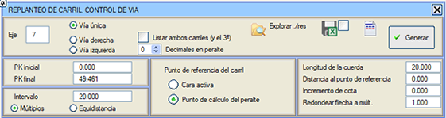
Sehimi katına yuvarla seçeneği, sehim değerini milimetre kesirleriyle vermeyi sağlar. Ayrıca, deveri belirttiğimiz ondalık basamak sayısını da seçme seçeneğimiz vardır: dever milimetre cinsindense 0'dan 2'ye, inç cinsindense 2'den 4'e kadar. Ray referans noktası: Bu nokta, eksene olan mesafe, X, Y, Z ve Dever hesaplaması için kullanılır. Her durumda her iki genişlik de listelenir. (örneğin: 1.435 ve 1.500)
Sonuçlar klasöründe, xlsx formatında seçim.Rapor başlıklarının metinlerini dosyalarda düzenleme ve kaydetme imkanı Oluşturulan dosyanın adı carril#x.res'tir; burada # güzergah numarasıdır ve x, tek hat durumunda u, sağ hat için d ve sol hat için i değerini alır. Eğer [] Her iki rayı da listele (ve 3.'yü) seçilirse, rapora üçüncü rayın verileri de dahil edilir. Rayların Kotları ve Eğimleri Bu rapor, her bir ray için kotu ve boyuna eğimi yazdırır. Kotlar, dever nedeniyle kırmızı kottan farklıdır ve boyuna eğim, devere geçiş nedeniyle kırmızı kottan farklıdır. Rayın referans noktası seçilebilir:
Sonuçlar klasöründe, xlsx formatında seçim.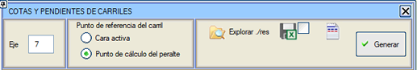
Rapor başlıklarının metinlerini dosyalarda düzenleme ve kaydetme imkanı . Rayların Kırmızı Kot Farkları KM'ler, rayların eksene olan mesafesi, ray kotu, rayın dikeyindeki arazi kotu, rayın Kırmızı Kot Farkı ve dever sütunlarını elde edeceğiniz rapor. Rayın referans noktasını, dever hesaplama noktası veya işleyen yüz arasından seçebilirsiniz. İşleyen yüz durumunda, eğer kırmızı kot farkını ray başının merkezinden hesaplamak isteniyorsa, ray başının yarı genişliğini girmeye izin verilir, rayın kotunu işleyen yüzünden tanımlayan nokta yerine. Sonuçlar klasöründe, xlsx formatında seçim.Rapor başlıklarının metinlerini dosyalarda düzenleme ve kaydetme imkanı 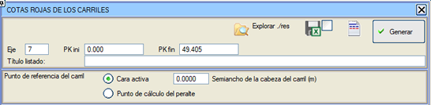
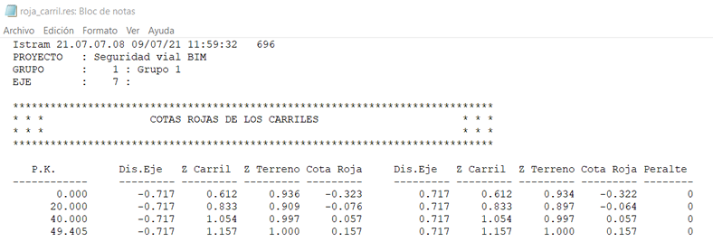 Hat Ripajı HAT RİPAJI (.top) raporu (ripvia.res) için hat verilerinin girişi aşağıdaki şekillerde yapılabilir:
Ayrıca şunlar da belirtilmelidir:
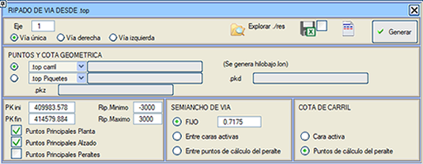
Rapor her nokta için şunları yazdırır:
Ve .top dosyasından gelen noktalar durumunda:
Raporda, alçak ray ile aynı olabilir veya olmayabilir olan teorik ray kotu gösterilir. Alçak ray kotu, deverlerin tanım tablosunda Ağırlık merkezini koru seçeneği etkinleştirilmişse "S" kurplarında kırmızı kottan farklı olabilir. Sonuçlar klasöründe, xlsx formatında seçim.Rapor başlıklarının metinlerini dosyalarda düzenleme ve kaydetme imkanı Bu rapor ayrıca, alçak raya (kurpların içi) karşılık gelen noktalardan geçen boykesiti içeren bir hilobajo.lon dosyası da oluşturur. Aliymanlarda çok yakın birkaç nokta varsa (dkm ≤ 5cm), en düşük kotlu olanı tutulur. Kurplarda da iç rayda çok yakın noktalar olabilir ve yine en düşük olanı tutulur. 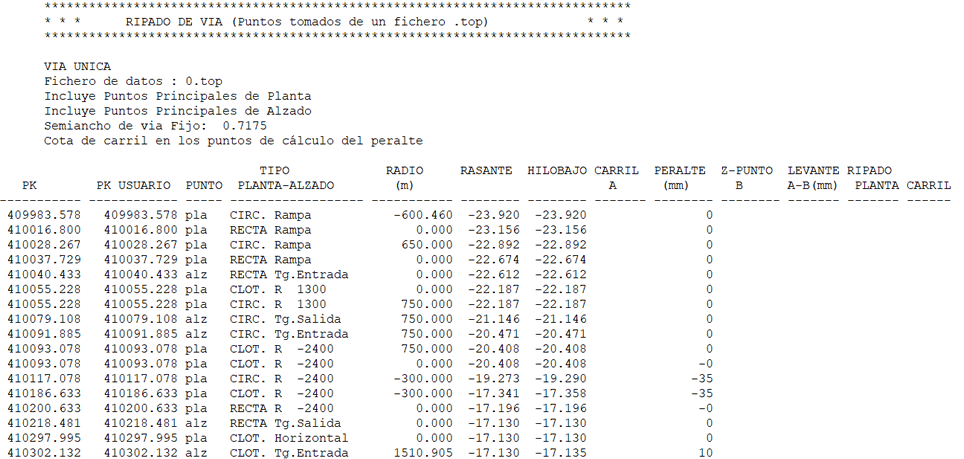 PLASSER Buraj Makinesi PLASSER BURAJ MAKİNESİ raporu (plasser.res), CGV5 veya benzeri bir yazılımla donatılmış bu tip buraj makinesi için geçerlidir. 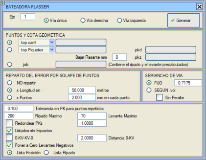
Sekmelerle ayrılmış ve sütunların aşağıdaki verileri içerdiği bir rapor oluşturur:
Noktalar ve geometrik kot Veri girişi ayrıca şunlar kullanılarak da yapılabilir:
Tolerans Alınan nokta zincirlerinde bir çakışma olması durumunda şunlar girilebilir:
Hat yarı genişliği
GEO Formatı .geo formatında bir rapor oluşturmak mümkündür: GüzergahX.geo. 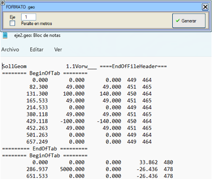 |
||||||||||||